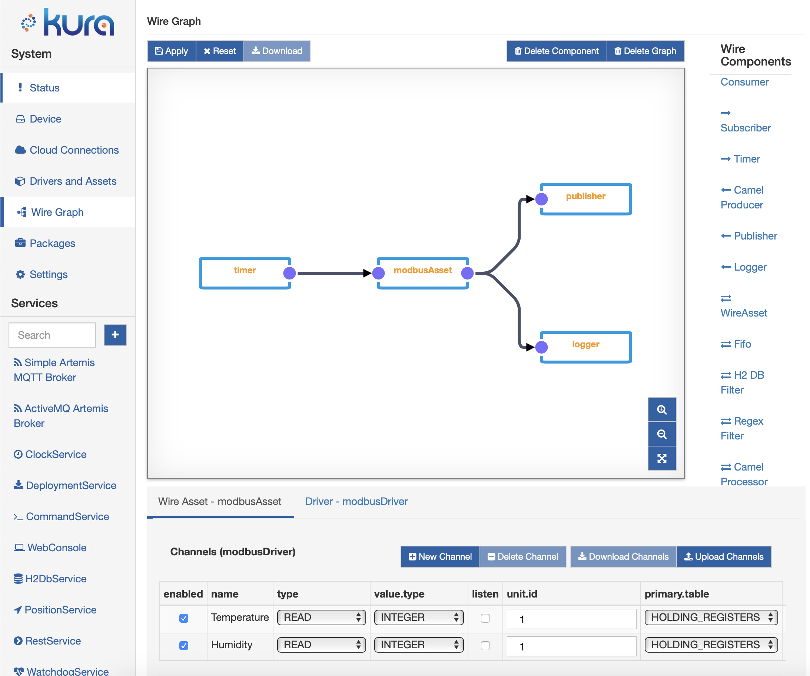

Welcome to the Eclipse Kura™ Documentation
Eclipse Kura™ turns an edge device into a managed IoT gateway. It collects data from field devices, processes it at the edge and delivers it to the cloud, while the gateway itself stays configurable, secure and manageable from its web console, through its REST APIs or from an IoT platform over MQTT.
Kura is a Java 21 application built on OSGi. Every feature is a configurable OSGi Declarative Services component that exposes a service API, so you can extend the gateway with your own add-ons, drivers and containerized applications.
-
Install
Install Kura from the Eclipse Kura APT repository on Debian-based arm64 and amd64 systems, or start the Docker image.
-
Configure the gateway
Set up network interfaces, firewall, cloud connections, certificates and users from the web console.
-
Connect field devices
Read and write industrial and IoT devices through Drivers and Assets: OPC UA, S7, Modbus, GPIO, Bluetooth LE, CAN.
-
Process data with Wires
Build data pipelines by wiring components together: acquire, filter, store, run AI inference and publish.
-
Connect to the cloud
Publish telemetry and accept remote management through Eclipse Kapua, Eclipse Hono, Sparkplug B or any MQTT broker.
-
Build your add-on
Generate a project with the Kura Addon Archetype, then build, package and deploy it to your gateway.
Architecture


Select the diagram to open it at full size. Read it from the bottom up. Kura runs on Linux, on a Java 21 runtime, inside the Eclipse Equinox OSGi framework. The Kura API (org.eclipse.kura.api) defines the service contracts that kura-core and the add-ons implement. Solid boxes ship with the kura-core package, dashed boxes are add-ons installed by the kura meta-package, dotted boxes are optional add-ons.
| Layer | What it provides | Learn more |
|---|---|---|
| Device Abstraction | Serial ports, USB and HID devices in the core; GPIO (libgpiod), GPS (gpsd), Bluetooth LE (BlueZ) and CAN (SocketCAN) from their add-ons | Serial Ports, GPIO, Bluetooth LE, CAN bus |
| Basic Gateway Services | Configuration and snapshots, system information and inventory, H2 and SQLite databases, clock synchronization, watchdog, position | Configuration Service, Snapshots, Inventory |
| Security | Crypto service, file and PKCS#11 keystores, certificates and CRLs, identities and permissions, JWT tokens, tamper detection | Crypto Service, Keystores, Authentication and Authorization |
| Network Configuration | Ethernet, Wi-Fi, cellular and VLAN interfaces through NetworkManager and ModemManager, firewall and NAT, network threat manager | Network Configuration, Firewall |
| Containers | Docker and Podman container orchestration, image signature verification, authenticated registries | Container Orchestration |
| Connectivity & Delivery | Multiple cloud connections (Eclipse Kapua, Eclipse IoT, Raw MQTT, Sparkplug B), store-and-forward data service, embedded Artemis MQTT broker | Cloud Connection API, Sparkplug |
| Assets & Drivers | Driver API and helpers in the core; OPC UA, S7, Modbus, GPIO, Bluetooth LE and CAN drivers and protocols as add-ons | Drivers and Assets, Field Protocols |
| Applications | Your Java add-ons, containerized applications, Kura Wires data flows, AI inference with Nvidia Triton | Kura Wires, Triton Inference Engine |
Kura core and add-ons
Since version 6.0.0 Kura is made of a mandatory core and a set of add-ons, each developed in its own repository and shipped as its own Debian package. Installing the kura meta-package gives you kura-core plus the add-ons that make up the complete gateway; the optional add-ons can be installed when you need them.
| Package | What it adds | Installed by kura |
|---|---|---|
| kura-core | Kura API, configuration, security, cloud connections, REST APIs, containers, databases | Yes, mandatory |
| kura-management-ui | Web console | Yes |
| kura-networking | Network interfaces, firewall and network threat manager | Yes |
| kura-wires | Kura Wires and Assets | Yes |
| kura-artemis | Embedded Apache ActiveMQ Artemis MQTT broker | Yes |
| kura-bluetooth | Bluetooth LE, iBeacon™ and Eddystone™, BLE drivers | Yes |
| kura-position | Position service based on gpsd | Yes |
| kura-command | Remote command execution | Yes |
| kura-deployment | Remote installation of deployment packages | Optional |
| kura-gpio | GPIO service and driver based on libgpiod | Optional |
| kura-opcua, kura-s7 | OPC UA and S7comm drivers | Optional |
| kura-modbus, kura-can | Modbus and CAN bus protocols | Optional |
| kura-camel | Apache Camel™ integration | Optional |
| kura-triton | Nvidia™ Triton Server inference engine | Optional |
| kura-log-filesystem | Filesystem log provider | Optional |
| kura-apps | Example applications and prototypes | Optional |
Install only what you need
kura-core can also be installed on its own, together with the add-ons your gateway needs. The Install Kura page lists the system dependencies of each package.
One API, two ways in


Most REST resources are also registered as MQTT request handlers. A script calling /services/configuration/v2 over HTTPS and a cloud platform sending a request to CONF-V2 over MQTT run the same code, so the same operations are available to REST clients and to cloud platforms. The same applies to keystores (KEYS-V2), identities (IDN-V2), security (SEC-V2), system information (SYS-V1), inventory (INVENTORY-V1) and cloud connections (CLD-V1).
REST Service · MQTT Namespace · Remote Management with Eclipse Kapua
Data flows with Kura Wires
Kura Wires lets you design data pipelines from the web console by placing components on a graph and wiring them together. A typical flow polls an Asset, stores the records in the gateway database, filters or aggregates them with SQL or JavaScript, and publishes the result to the cloud.

More resources
- Javadoc of the Kura API
- Eclipse Kura™ GitHub organization, with the repositories of the core and of every add-on
- Eclipse Kura™ Apache ActiveMQ Artemis MQTT broker addon documentation
Coming from Kura 5?
- Kura 6 requires Java 21.
- The framework is split into
kura-coreand add-ons: networking, web console, Wires and Assets, Bluetooth, position and command moved out of the core into the packages listed above. - Remote installation of deployment packages (
DEPLOY-V2) is provided by the optionalkura-deploymentadd-on. - Apache Camel™, the S7comm and OPC UA drivers, Modbus, CAN, the filesystem log provider and the Nvidia™ Triton integration are developed in their own repositories.
- Deprecated APIs have been removed from
org.eclipse.kura.api: check the Javadoc before porting an add-on. - Add-ons are built with Maven and bnd: start from the Kura Addon Archetype.